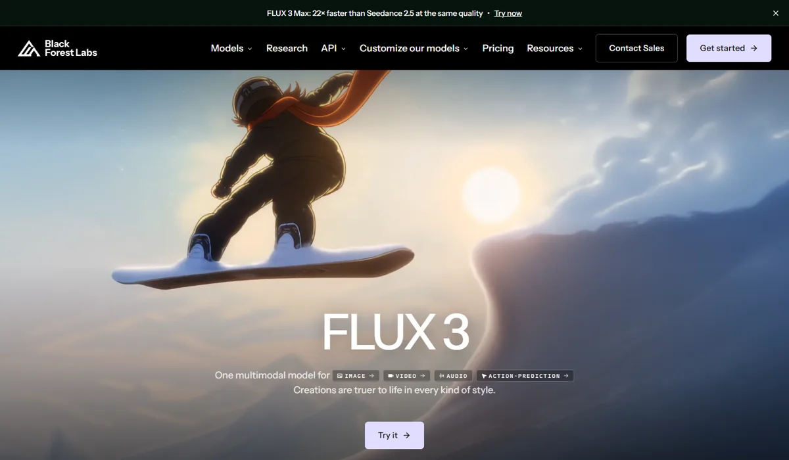
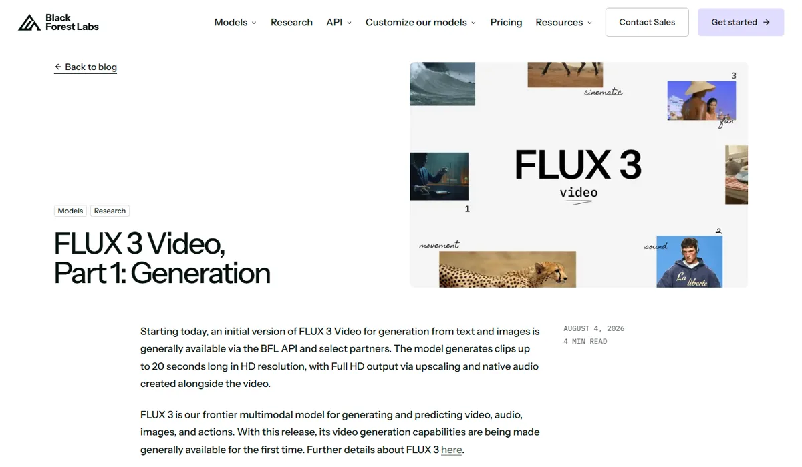

Black Forest LabsBlack Forest Labs（FLUX）
Black Forest Labs 由 Stable Diffusion 的核心作者创立，是典型的“模型供应商”：不做大众 App，把 FLUX 模型通过 API 和授权卖给 Adobe、Canva、Meta、微软等平台。2026 年它从图像扩展到视频、音频和机器人动作，FLUX 3 Max 在视频盲测中与 Seedance 2.5 并列，价格却只有约八分之一。
一页结论
- 模型供应商定位：BFL 称 Adobe、Canva、Meta、微软都在基于 FLUX 打造创意功能，fal、Replicate、Together AI 是主要分发平台S1
- 从图像走向多模态：FLUX 3（2026 年 7 月）是图像、视频、音频联合训练的模型，并延伸到机器人动作预测，与 Audi 合作测试装配任务S4S5
- 视频性价比突出：FLUX 3 Max 视频盲测第 4，价格每分钟 4.35 美元，约为 Seedance 2.5 的八分之一；FLUX 3 第 8S2
- 图像第二梯队：FLUX 3 Image 文生图盲测第 11，落后 OpenAI、Google；但 The Decoder 测试中好于 Midjourney V8S6S7
- 开源 + 授权双轨：FLUX 3 Image Klein（56 亿参数）等开放权重，但采用非商用社区许可，商用需购买授权S3S8
01公司介绍
02公司战略
BFL 的主线是“做最好的视觉模型，卖给做产品的人”：不做面向大众的 App，而是通过 API、合作平台和授权进入别人的产品；同时把模型扩展到视频、音频和物理世界。
03定位与竞争
一句话定位：为创意软件公司、AI 平台和开发者，在图像、视频生成与机器人等场景中，提供可通过 API 调用或授权私有部署的高性价比视觉模型。
| 目标用户 | 主要入口 | 依据 |
|---|---|---|
| 创意软件公司 | 授权与企业合作 | Adobe、Canva、Meta、微软基于 FLUX 打造功能S1 |
| AI 平台与开发者 | BFL API、fal、Replicate、Together AI | 官方称这些平台上其企业模型最受欢迎之一S1 |
| 开源社区 | Hugging Face 开放权重 | 官方称其开源模型是 Hugging Face 上最受欢迎的图像模型S1 |
| 机器人与制造 | FLUX 3 Action、合作伙伴 | 与 mimic robotics 合作，Audi 测试装配任务S5 |
04产品与模型矩阵
| 类别 | 模型 / 产品 | 定位 | 状态（2026-11） |
|---|---|---|---|
| 视频 | FLUX 3 Video / FLUX 3 Max | 最长 20 秒，原生音频，13 种以上语言口型同步；首尾帧、多关键帧、续写、多镜头；草稿模式 | 8 月 4 日正式可用，9 月增加 2K、4KS3S9 |
| 图像 | FLUX 3 Image | 文生图与多步编辑，编辑时保持其余部分不变 | 10 月 1 日发布S3S11 |
| 图像（开源） | FLUX 3 Image Klein | 56 亿参数，文生图、编辑、多参考，社区许可 | 10 月 15 日开放权重S3S8 |
| 图像 | FLUX.2 系列（pro / flex / max / dev / klein） | 上一代 | 可用S3 |
| 机器人 | FLUX 3 Action | 70 亿参数的动作预测模型，开放权重（非商用许可） | 已发布S12 |
| 工具 | FLUX Video Upscale | 视频放大 | 8 月 20 日上线S3 |
| 3D | — | 无 3D 生成产品 | — |
- B 轮 3 亿美元估值 32.5 亿美元S1
- FLUX.2 klein每张 0.014 美元起S3
- 发布 FLUX 3图像、视频、音频、动作统一模型S5
- FLUX 3 Video 正式可用最长 20 秒、原生音频S9
- 视频 2K / 4K每秒 0.40 / 0.80 美元S3
- FLUX 3 Image 与 Klein 开源版1K 图每张 0.048 / 0.009 美元S3


05生成能力与可控性
视频在第三方盲测中进入前五，图像在第二梯队；BFL 自己的偏好测试结果更乐观，但只能作为厂商说法参考。
| 能力 | 视频（FLUX 3 Video） | 图像（FLUX 3 Image） |
|---|---|---|
| 分辨率 | 720p 原生，1080p 通过放大；9 月起支持 2K、4KS3S9 | 768、1K、1.5K、2K、4K；支持自定义尺寸S3 |
| 长度 | 单次最长 20 秒；续写最长 15 秒S3S9 | — |
| 输入 | 文生视频；图生视频支持首帧、尾帧、多个关键帧；可从最多 4 秒已有视频续写；多镜头S9 | 文生图、编辑、多参考S3 |
| 音频 | 原生生成对白、音效、环境音，13 种以上语言口型同步S9 | — |
| 编辑 | — | 多步编辑，修改时保持画面其余部分不变S11 |
| 低成本草稿 | 草稿模式保持主体、构图、运动不变，价格为正式渲染的一小部分S9 | — |
| 厂商自测 | 官方称人工评审中文生视频领先、图生视频与 Seedance 2.0 持平；对 Runway Gen-4.5 胜率 77%（厂商称，未经独立验证）S5S9 | — |
第三方评测怎么说
| 评测方 | 时间 | 对比对象 | 结论 |
|---|---|---|---|
| Artificial Analysis（用户盲选） | 2026-11-04 访问 | 文生视频全榜 | FLUX 3 Max 第 4，与第 5 名 Seedance 2.5 只差 1 分，价格约为其八分之一S2 |
| The Decoder（Matthias Bastian） | 2026-03-18 | Midjourney V8 vs Nano Banana、GPT Image 1.5、FLUX | 复杂提示词测试中 FLUX 略好于 Midjourney V8，但不如两款自回归模型S7 |
| Decrypt（Jose Antonio Lanz） | 2026-07-23 | FLUX 3 发布 | 未做独立测试；指出 BFL 的偏好测试只是让评审二选一，并非标准化评分，胜率不能当作固定基准S5 |
FLUX 3 尚未找到署名媒体的独立对比实测；转售平台的“评测”未采用。
评测共识：视频进入第一梯队且价格最有竞争力；图像排在 OpenAI、Google 之后；厂商自测数据较乐观，需要以第三方盲测为准。
06解决方案与场景
07商业模式与价格
按量计费的 API（不收订阅费和席位费）加上商用授权；没有大众订阅产品。
| 模型 | 价格 |
|---|---|
| FLUX 3 Image | 768 方图 $0.041；1K $0.048；2K $0.100；4K $0.607（每张） |
| FLUX 3 Image Klein（开源版 API） | 1K $0.009；2K $0.014；4K $0.036（每张） |
| FLUX 3 Video 2K / 4K | 文生视频、图生视频每秒 $0.40 / $0.80；续写每秒 $0.65 / $0.95 |
| FLUX Video Upscale | 每百万像素·秒 $0.07（精确）/ $0.10（创意） |
| FLUX.2 klein | 每张 $0.014 起 |
BFL 官方发布记录，2026-11-05 访问；720p、1080p 视频价格见官方价格页（未能直接读取）。来源：S3
| 任务 | 用什么 | 估算成本 |
|---|---|---|
| 一张 1K 电商图 | FLUX 3 Image / Klein | $0.048 / $0.009 |
| 一张 4K 海报 | FLUX 3 Image | $0.607 |
| 一条 8 秒视频（标准分辨率） | FLUX 3 Max（经 fal） | 约 $0.58 |
| 一条 8 秒 2K 视频 | FLUX 3 Video | $3.20 |
8 秒标准分辨率视频按 Artificial Analysis 列出的每分钟 4.35 美元换算，其余按官方单价换算。来源：S2S3
授权：官网列出 Builder、Platform、Professional、Enterprise、Synthetic Data 等授权档位，需购买或联系销售，未公开价格S8。
08上下游与渠道
09用户、客户与收入
10用户口碑与容错设计
11版权与合规
12近期动态
13潜在风险分析意见
- 客户即对手：Meta、微软既是客户，也都有进入前 15 的自研图像模型，一旦自研成熟，可能减少采购
- 依赖分发平台：大量调用经由 fal、Replicate 等第三方，议价权和用户关系不在自己手里
- 图像被大厂拉开：图像排名第 11，在 OpenAI、Google 的推理型模型面前优势减弱
- 多线作战：同时做视频、音频、机器人，研发资源可能分散
- 厂商自测与第三方结果不一致的风险：营销口径偏乐观，可能损害企业客户信任
14综合结论分析意见
关键动作拆解（三问法）
| 动作 | 为什么做（推断） | 效果如何 | 要不要学 |
|---|---|---|---|
| 不做大众 App，只做模型供应商 | 避免与客户竞争，进入大平台 | 进入 Adobe、Canva、Meta、微软S1 | 借鉴中立能换来渠道 |
| 从图像扩展到视频和机器人 | 官方：视频预测是学习物理规律的途径 | 视频进入前五；机器人处于测试阶段S2S5 | 观望多线投入的回报要看执行 |
| 视频定低价 | 用性价比切入被大厂占据的视频市场 | 价格约为 Seedance 2.5 的八分之一S2 | 借鉴价格是专业公司最直接的武器 |
| 开源 + 非商用许可 | 用开源扩大影响，用授权保留收入 | 社区广泛使用，商用需授权S1S8 | 借鉴开源与收费的边界要写清楚 |
优势
- 顶级研究团队
- 视频性价比
- 中立供应商定位与大客户
劣势
- 图像排名第二梯队
- 没有自有入口
- 收入不透明
机会
- 创意软件的底层模型
- 多语言视频本地化
- 机器人与物理世界
威胁
- 客户自研
- 大厂的价格战
- 开源对手
对本系列三个问题的回答
- 大厂会不会通吃？ BFL 给出了专业公司的另一条路：不和大厂抢用户，而是当它们的供应商；视频盲测与字节并列、价格低得多，说明专业公司在模型层仍有竞争力
- 钱从哪里来？ 按量计费的 API 与商用授权，客户是创意软件公司和 AI 平台；收入未披露
- 3D 离商用还差什么？ BFL 没有 3D 产品，不提供参考
对 AI 产品团队的启示
高优借鉴
- 视频生成成本敏感的场景，可以把 FLUX 3 Max 纳入候选：盲测与 Seedance 2.5 持平、价格约八分之一
- 草稿模式保持主体与构图不变，再出正式版，是降低视频成本的有效设计
- 需要私有部署的团队可评估开源 Klein，但商用前要购买授权
观望
- FLUX 3 在机器人、物理世界上的落地
- 厂商自测与第三方结果的差异
不建议
- 直接引用厂商自测胜率做选型依据
- 忽视开源模型的非商用许可直接上线
信息缺口
以下信息未找到可靠的公开来源，本报告不做推测。
- 收入、付费客户数与 API 调用量
- FLUX 3 Video 720p、1080p 的官方价格（价格页未能直接读取）
- 商用授权各档位价格
- FLUX 3 Dev 开放权重版本的发布时间
- FLUX 3 的独立对比实测（署名媒体）
来源
A 官方 · B 权威媒体或第三方 · C 社区（仅用于口碑与线索）。访问日期均为 2026-11-05。
- S1 · ALaying the Foundations for Visual Intelligence — Our $300M Series BBlack Forest Labs 官方博客 · 2025-12-01
- S2 · BAA-Video-T2V v2.1 Text to Video LeaderboardArtificial Analysis · 2026-11-04 访问
- S3 · ARelease NotesBlack Forest Labs 文档 · 2026-11-05 访问
- S4 · BBlack Forest Labs Releases FLUX 3: A Multimodal Flow ModelMarkTechPost · 2026-07-26
- S5 · BBlack Forest Labs Unveils FLUX 3 AI: Ditches Stills for Video—And Robot HandsDecrypt · 2026-07-23
- S6 · BAA-Image-T2I v2.1 Text to Image LeaderboardArtificial Analysis · 2026-11-04 访问
- S7 · BMidjourney V8 rolls out with 5x faster generation but charges 4x more for its best featuresThe Decoder · 2026-03-18
- S8 · APricing / LicensingBlack Forest Labs · 2026-11-05 访问
- S9 · AFLUX 3 Video, Part 1: GenerationBlack Forest Labs 官方博客 · 2026-08-04
- S10 · Abfl.ai 首页横幅Black Forest Labs · 2026-11-05 访问
- S11 · BBlack Forest Labs launches Flux 3 Image with multi-step editing that leaves the rest of your picture aloneThe Decoder · 2026-10
- S12 · BBlack Forest Labs Releases FLUX 3 Action: A 7B Open-Weights World Action ModelMarkTechPost · 2026-09-24